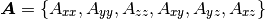

1.2. Matmodlab Conventions¶

Tensor Storage¶
In general, second-order symmetric tensors are stored as 6x1 arrays with the following ordering
(1)
Tensor components are used for all second-order symmetric tensors.
Nonsymmetric, second-order tensors are stored as 9x1 arrays in row major ordering, i.e.,

Note
The tensor order is runtime configurable using ordering keyword to the MaterialModel constructor. See Invoking User Materials for details.
Engineering Strains¶
The shear components of strain-like tensors are sent to the material model as engineering strains, i.e.

matmodlab Namespace¶
Input scripts to Matmodlab should include:
from matmodlab import *
to populate the script’s namespace with Matmodlab specific parameters and methods.
Parameters¶
Some useful parameters exposed by importing matmodlab are
- ROOT_D, The root matmodlab directory
- PKG_D, The matmodlab/lib directory, the location shared objects are copied
- MAT_D, The directory where builtin materials are contained
Methods¶
Some useful methods exposed by importing matmodlab are
- MaterialPointSimulator, The material point simulator constructor
- Permutator, The permutator constructor
- Optimizer, The optimizer constructor
- Logger, The logger factory method.
- Expansion, The expansion model constructor
- TRS, The time-temperature shift model constructor
- Viscoelastic, The viscoelastic model constructor
Each of these methods is described in more detail in the following sections.